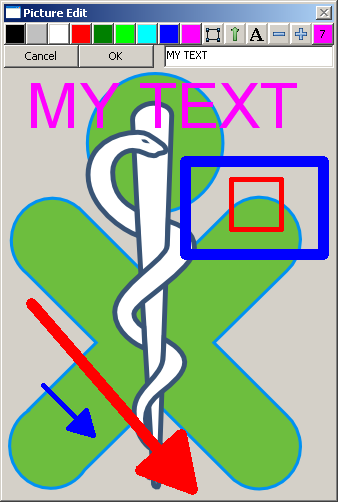

wxKit (December 2010)
Introduction
wxKit is a wysiwyg html editor with a number of special features. Because at this time wx.WebKit is not yet available, we switched to QTWebKit, embedded in wxPython with the help of PySide and execnet. More details are at the end of this page.The most important features of the editor are :
Execution of Python and / or MatLab code
Image Editor
|
The button at the upper right, indicates the current color and line width for new elements (not necessarily the properties of the selected elements). The font size is derived from the line width. Clicking on this button, will change the properties of all the selected objects according to this settings. More than 1 element can be selected, by clicking on objects, while holding the shift key. Text can be modified by selecting one and only one text object, the current text will appear in the edit box. After modifying the text in the edit box, press Enter and the text of the object will be modified accordingly. |
 |
Formula Editor